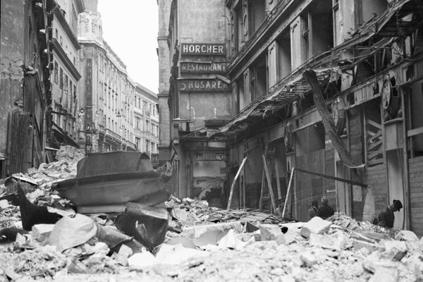
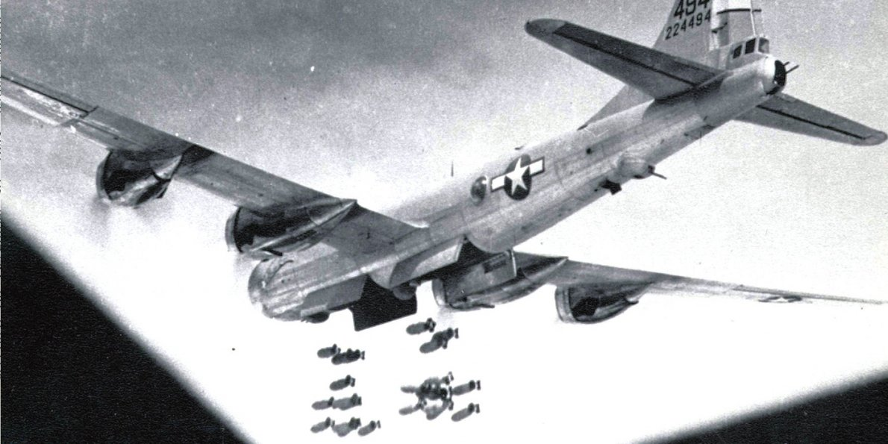
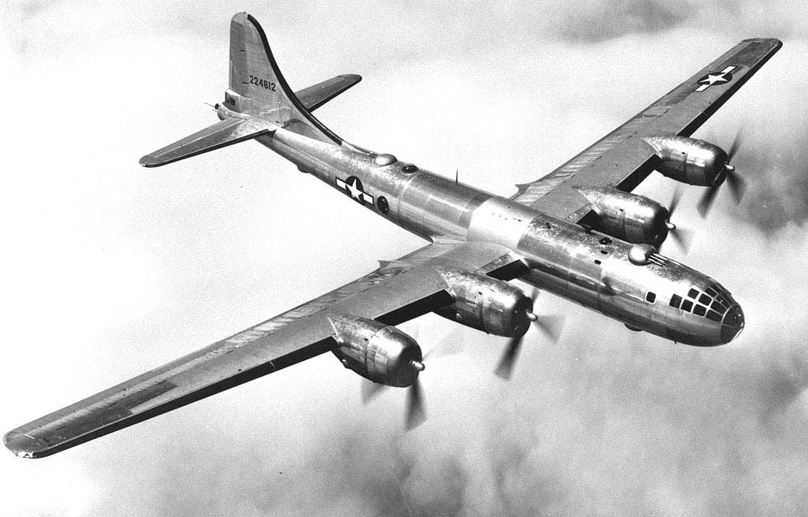
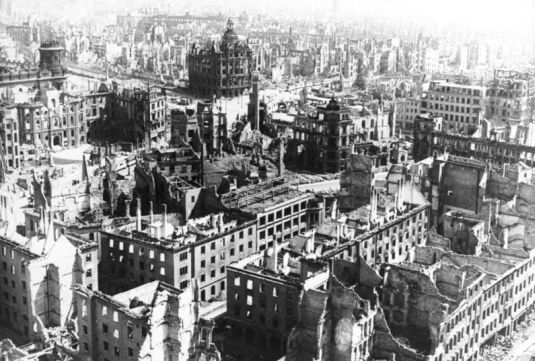

Bombardamentele strategice din timpul celui de-al Doilea Razboi Mondial au fost efectuate pe o scara nemaiîntalnita pana atunci si pot fi considerate astazi ca exemple de bombardamente teroriste, de masacrare a civililor. Campaniile de bombardamente strategice duse de Germania Nazista, Statele Unite, Regatul Unit si Imperiul Japonez au folosit întreaga gama de arme cunscute în epoca: bombe conventionale, incendiare si, la finalul razboiului, nucleare.
La cateva ore de la declansarea razboiului pe 1 septembrie 1939, presedintele SUA, (în acel moment un stat neutru), Franklin D. Roosevelt, a cerut partilor beligerante sa-si limiteze raidurile lor aeriene doar la tinele militare. A doua zi, Franta si Regatul Unit au declarat ca sunt de acord cu cererea americana. Germania nazista a asteptat pana pe 18 septembrie, dupa care a acceptat propunerea americana, pana în acel moment Varsovia era în zona de actiune a armatelor germane, fiind considerata o tinta militara legitima de catre agresorii germani.

Regatul Unit avea la începutul razboiului o politica a bombardamentelor aeriene care viza doar tintele militare si ale infrastructurii, precum porturile si caile ferate cu importanta militara dovedita. Guvernul britanic a renuntat la începutul razboiului în mod voluntar la bombardarea în mod deliberat proprietatile civile din afara zonelor de lupta. Aceasta politica a fost abandonata pe 15 mai 1940, la doua zile dupa bombardarea Rotterdamului, cand RAF a primit permisiunea sa atace tinte din Ruhr, inclusiv uzinele civile care contribuiau la efortul german de razboi. Primul raid al RAF împotriva tintelor civile din interiorul teritoriului german a avut loc în noaptea de 15 – 16 mai 1940.

Pe 24 august 1940, mai multe avioane de bombardament germane au survolat Londra si au lansat bombe asupra cartierelor de est si nord-est ale capitalei britanice. A izbucnit imediat o perioada de represalii reciproce, concentrate în principal împotriva zonelor locuite de civili. Germanii nu s-au îngrijit din timp sa dezvolte o flota de bombardiere grele si dupa declansarea invaziei din URSS, ceam mai mare parte a bombardierelor Luftwaffe au fost folosite în operatiunile de pe frontul de rasarit. Desi raidurile bombardierelor germane erau în general de natura tactica, fiind executate în sprijinul actiunilor fortelor terestre, civilii sovietici au suferit pierderi grele în timpul atacurilor Luftwaffe împotriva oraselor pe care germanii încercau sa le cucereasca.

In februarie 1942, britanicii au abandonat tentativele de executare a unor bombardamente strategice de precizie si a trecut la tactica bombardamentelor de noapte asupra unor zone locuite de civili pentru masacrarea acestora, în loc de tinte bine definite. Aceste bombardamente au fost îndreptate în egala masura împotriva tintelor de interes militar, cat si împotriva celor eminamente civile, urmarind efecte teroriste sau ceea ce a fost numit în epoca efectul de „dehausing” – demolarea unor cartiere muncitoresti, ceea ce ar fi trebuit sa provoace migrarea populatiei si lipsirea zonelor industriale de forta de munca necesara. Aceasta strategie a genocidului a ramas valabila pana în ultima luna a razboiului în Europa, dar mai trebuie spus ca, odata cu dezvoltarea tehnologiilor electronice de descoperirea tintelor, s-a pus mai mult accent pe bombardamentele strategice de precizie a unor obiective precum rafinariile, nodurile de comunicatie, fabricile de submarine, tancuri sau avioane. Atacurile de tip „dehausing” au ramas o varianta secundara dar cu efecte terifiante asupra civililor, folosita în special atunci cand vremea defavorabila împiedica descoperirea tintelor industriale.